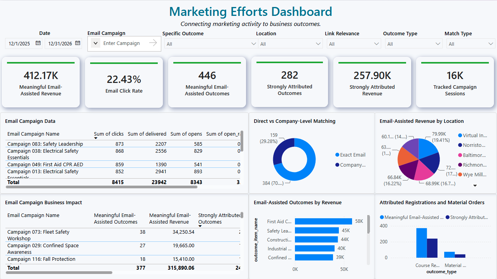
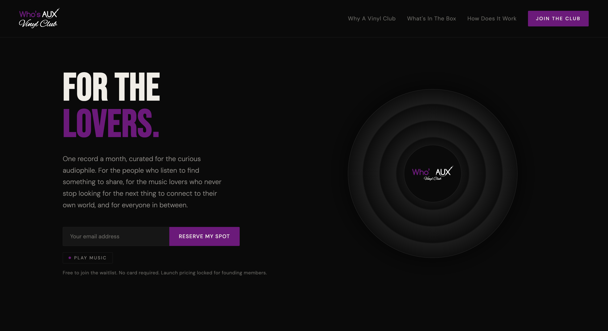
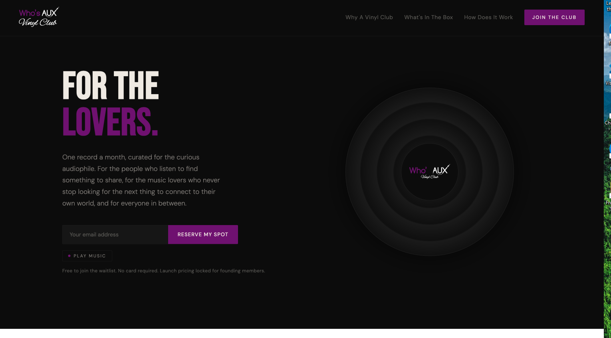
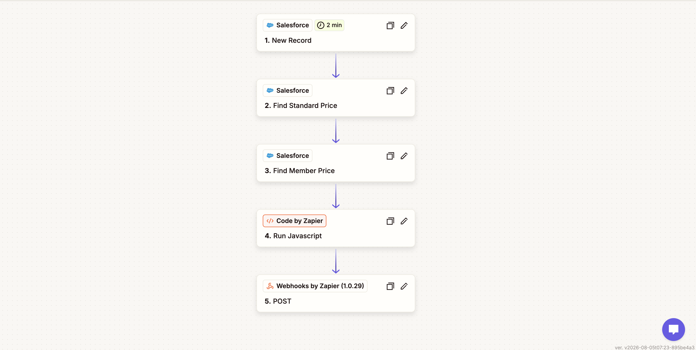

Systems &
Analytics.
I build the infrastructure behind marketing, registrations, and ecommerce: Salesforce workflows, SQL data models, Python ETL, API integrations, and Power BI reporting.
Browse case studies ↓
Who’s AUX
Music Ops
I developed an automated playlist workflow serving nine playlists across two brands, then expanded it to support Vinyl Club recommendations and a local dashboard for reviewing sources, approvals, and output files.
Read case study ↗Process / 01 — 03
One catalog.
Several workflows.
Illustrative workflow map / not a live dashboard screenshot
Selected technical projects.
Project architecture, implementation details, findings, and lessons from the build.
Marketing Attribution Warehouse
A 32-table attribution warehouse connecting campaign engagement to registrations, orders, and revenue with ranked match confidence.

Who’s AUX Diagnostic Analytics
Power BI diagnostics across Shopify, Amazon, TikTok Shop, and paid advertising to investigate changing channel performance.

Vinyl Club Predictive Analytics
A three-scenario, twelve-month feasibility model comparing a vinyl subscription against three other product opportunities.

Operational Data Integration
Salesforce lead routing, registration records, member/non-member pricing, and WooCommerce catalog automation.
Architecture first.
Usable reporting after.
The common work across these projects is practical: reliable identifiers, manageable handoffs, clear field mappings, and reporting that explains what it is measuring.